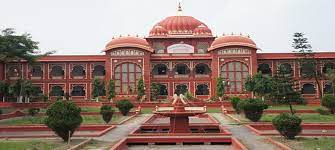

Darbhanga is the fifth-largest city and municipal corporation in the state of Bihar in India, and is considered an important city in North Bihar. It serves as the headquarters of the Darbhanga district and the Darbhanga division.
Darbhanga was the seat of the erstwhile Khandwala zamidaar dynasty under the Mughals and British India. It is the capital of the proposed Indian state, Mithila. It is considered an important medical center of North Bihar as it the location of Darbhanga Medical College and Hospital, and the second AIIMS of the state is to be constructed here.[6]
About
arbhanga is a municipal corporation town. Presently headquarter of Darbhanga district as well as Darbhanga Division. Darbhanga is the 5th largest city of Bihar. It is one of the most important districts and big cities of North Bihar. Darbhanga is also known as Heart of the Mithilanchal. According to census 2011, the total population of the District is 3937385. The Male population is 2059949 and Female population is 1877436. The Population of Darbhanga Town is 371356. Darbhanga district is having a total geographical area of 2279 Sq. Km. It is situated between longitude 85 degree 45 minute East and 25 degree 53 minute North.
The land in Darbhanga District is generally very fertile and there are hardly and uncultivated areas. The district is, therefore, devoid of any forests. Among the trees found in the district are Sisam, Khair, Palmyra and Khajur. Mango, jackfruit, pipal and tamarind are found near village settlements. The district also has some tracts of grasslands.
Wild animals existed in the district up to the end of the 18th century. But with the progressive use of land and rapid growth of population, the forest areas were cleared and the wild animals became almost extinct. Wolves and hyenas are rare, while jackals are common. Fox and wild cats are also met with occasionally.
History
Under the British Rule, Darbhanga was a part of Sarkar Tirhut up to 1875, when it was constituted into a separate district. The subdivisions had been created earlier – Darbhanga Sadar in 1845, Madhubani in 1866 and Samastipur (then known as Tajpur) in 1867. It was the part of Patna division till 1908, when the Tirhut division was created with its headquarters at Muzaffarpur. As a result of reorganization of districts in the State which took effect in the year 1972, Madhubani and Samastipur subdivision were upgraded as independent districts and then the trimmed Darbhanga district has two subdivisions, viz, Darbhanga Sadar and Benipur consisting of 12 Development Blocks in all. Biraul Subdivision was created in 1992 and six more Development Blocks were created namely Hanuman Nagar, Tardih, Gaura Bauram, Kiratpur, Kusheshwar Asthan East and Alinagar in later stage.
The district is bounded on the north by Madhubani district, on the south by the district of Samastipur, on the east by Saharsa district and on the west by the district of Muzaffarpur and Sitamarhi.
Present
The district is noted for its trade in Fish, Mango and Makhana. Among its educational institutions are Chandradhari Mithila College, Chandradhari Mithila Science College, Darbhanga Medical College, Women Institute of Technology and Darbhanga Engineering College and Various other institutions.
he design was prepared by US architectural firm Chelsea West Architects.[4] This planetarium has 150 seats.[citation needed] The auditorium has 300 seats. An orientation hall with 50 seats has been built. The planetarium has three shapes: elliptical, spherical, and dome-shaped. The dome size is 14 meters. The content is to be 3D.[citation needed]
Internal view of the Darbhanga Planetarium
A solar parking pathway, cafeteria, lobby, science gallery, service building, and lotus pond are included..[5]
Planetarium timing
Planetarium timing
On the second day of inauguration, on January 13, 2023, a special show was presented on the orders of Darbhanga District Magistrate. People were informed about the position of planets, constellations and astronomical events in the solar system.[6]
Tourism place
1.Ahilya Asthan
According to Ramayana, Rama and Lakshmana went to forest with Brahmarshi Vishvamitra to protect his yagna. On their way, they came across a deserted place. When Rama inquired about the place, Visvamitra related the story of Sati Ahalya, wife of Gautama Maharishi. The Maharishi used to do penance by staying here with his wife. One day when Gautama Rishi had gone out of the ashram, in his absence, Indra came in disguised as Gautama Rishi. Ahalya, without knowing the real identity of the person, succumbed to Indra's desire. Gautam Maharishi came to know this and cursed his wife to lie as a stone in this place. When she pleaded, the maharishi said, when Rama visits this place, you will return to your normal self. Visvamitra told Rama to go into the ashram. As soon as Rama's radiance brightened the place, Ahalya stood up with her own body and prayed to Rama. Ahalya being the wife of Maharishi, Rama and Lakshmana paid their obeisance to her.[3]
Ahalya Sthan is the place where once the ashram of Maharishi Gautama stood. The temple, in its present structural form was built between 1662 and 1682 during the rule of Maharaja Chhatra Singh and Maharaja Rudra Singh. This is also the first Ram Janaki temple in India.[4] The temple is beautifully made with fine patterns and designs of art and ancient Indian architecture. Inside the shrine, there is a flat stone said to contain the foot prints of Sita, wife of Ram, as the main object of worship.[5]
2.Kusheshwar Asthan
Kusheshwar Asthan, also known as Baba Kusheshwar Nath, is an important Hindu pilgrimage site. and is famous for the mela of Shrawan, 4th month according to the Hindu calendar system. Baba Kusheshwar Nath Temple is located in the eastern district of Darbhanga, Bihar, which is about 70 km southeast of the district headquarters. This temple is also known as Baba Dham of Mithila. It is situated at the confluence of three rivers and is dedicated to Lord Shiva. Many devotees come to the temple every day to worship and offer prayers. The temple doors open every day at 4 am. There is a sacred well called Chandrakup (well) in the temple complex. It is believed that just by entering the temple, devotees feel a sense of peace. Lord Shiva fulfills the wishes of all devotees who come here
3.Shyama Mai mandir
Mother Kali's Dham Shyama Kali temple is built on the pyre in Darbhanga, Bihar. A large number of devotees visit here and all Manglik works are also done. This temple is known as Shyama Mai's temple.[1] Shyama Mai's temple is built on the pyre of Maharaja Rameshwar Singh at the crematorium Ghat and is an unusual occurrence in itself. Maharaja Rameshwar Singh was one of the seeker kings of the Darbhanga royal family. Due to the name of the king, this temple is known as Rameshwari Shyama Mai. The temple was founded by Maharaj Kameshwar Singh of Darbhanga in 1933.
Festivals
In the sanctum sanctorum, a huge statue of Maa Kali is installed on the right side of Mahakal and Ganapati and[1]Batukabhairava Dev on the left. The Mund Mala around the neck of the mother has the equivalent of the letters of the Hindi alphabet. Devotees believe that this is because the Hindi alphabet is a symbol of creation. Aarti held in the temple has special significance. Devotees who come here wait for hours to join the temple aarti. During Navratri,[2] the number of devotees increases and a fair is held here.
4.Darbhanga raj campus

The Darbhanga Raj, also known as Raj Darbhanga and the Khandwala dynasty, was a Maithil Brahmin dynasty and the rulers of territories, not all contiguous, that were part of the Mithila region, now divided between India and Nepal.[3]
The rulers of Raj Darbhanga were Maithil Brahmins and their seat in the town of Darbhanga became the core of the Mithila region as the rulers were patrons of Maithil culture and the Maithili language.[4][5]
At its peak, the dynasty encompassed over 4000 square miles and is described as the "largest and richest of the North Bihar zamindaris and one of the greatest zamindaris of British India".[6] Despite not being recognised as a princely state by the British, Raj Darbhanga was larger and held more magisterial powers then many princely states, particularly those in Western India.
The Khandaval dynasty were Maithil Brahmins who came into prominence in the time of the Mughal emperor Akbar until the 1960s. The extent of their lands, which were not contiguous, varied over time, and by the British era, their area of ownership was smaller than the area that they were granted under earlier sanad arrangements. A particularly significant reduction occurred when the influence of the British Raj caused them to lose control of the territories that were in Nepal but, nonetheless, their holdings were considerable. One estimate suggests that when their rule came to an end, the territories comprised around 6,200 square kilometres (2,400 sq mi), with around 4500 villages.[2]

 Under the British Rule, Darbhanga was a part of Sarkar Tirhut up to 1875, when it was constituted into a separate district. The subdivisions had been created earlier – Darbhanga Sadar in 1845, Madhubani in 1866 and Samastipur (then known as Tajpur) in 1867. It was the part of Patna division till 1908, when the Tirhut division was created with its headquarters at Muzaffarpur. As a result of reorganization of districts in the State which took effect in the year 1972, Madhubani and Samastipur subdivision were upgraded as independent districts and then the trimmed Darbhanga district has two subdivisions, viz, Darbhanga Sadar and Benipur consisting of 12 Development Blocks in all. Biraul Subdivision was created in 1992 and six more Development Blocks were created namely Hanuman Nagar, Tardih, Gaura Bauram, Kiratpur, Kusheshwar Asthan East and Alinagar in later stage.
The district is bounded on the north by Madhubani district, on the south by the district of Samastipur, on the east by Saharsa district and on the west by the district of Muzaffarpur and Sitamarhi.
Under the British Rule, Darbhanga was a part of Sarkar Tirhut up to 1875, when it was constituted into a separate district. The subdivisions had been created earlier – Darbhanga Sadar in 1845, Madhubani in 1866 and Samastipur (then known as Tajpur) in 1867. It was the part of Patna division till 1908, when the Tirhut division was created with its headquarters at Muzaffarpur. As a result of reorganization of districts in the State which took effect in the year 1972, Madhubani and Samastipur subdivision were upgraded as independent districts and then the trimmed Darbhanga district has two subdivisions, viz, Darbhanga Sadar and Benipur consisting of 12 Development Blocks in all. Biraul Subdivision was created in 1992 and six more Development Blocks were created namely Hanuman Nagar, Tardih, Gaura Bauram, Kiratpur, Kusheshwar Asthan East and Alinagar in later stage.
The district is bounded on the north by Madhubani district, on the south by the district of Samastipur, on the east by Saharsa district and on the west by the district of Muzaffarpur and Sitamarhi.